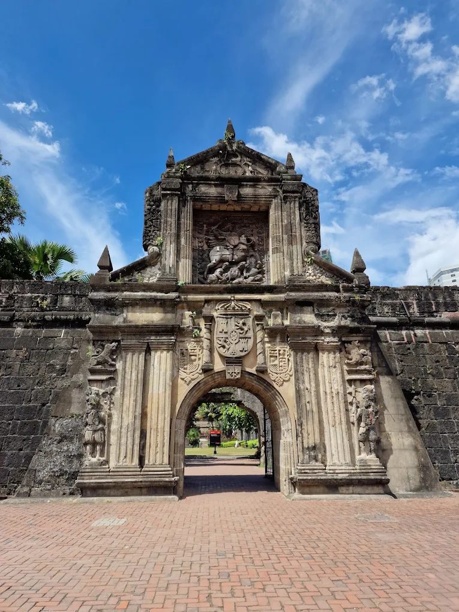
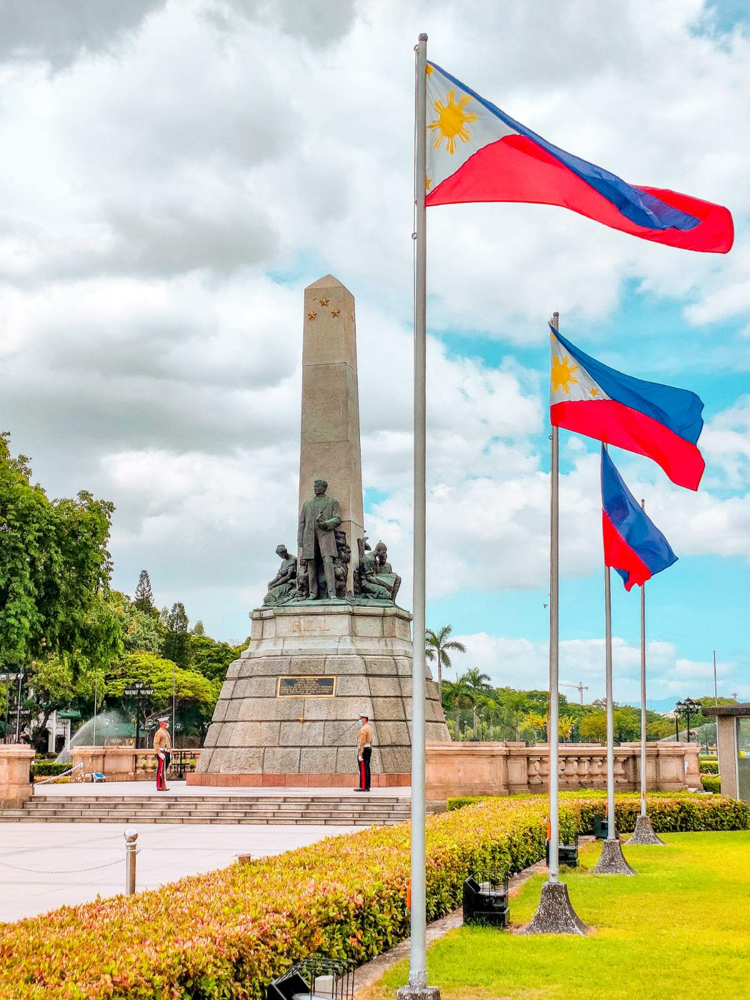
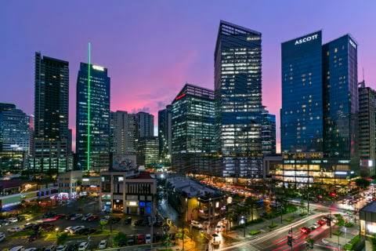
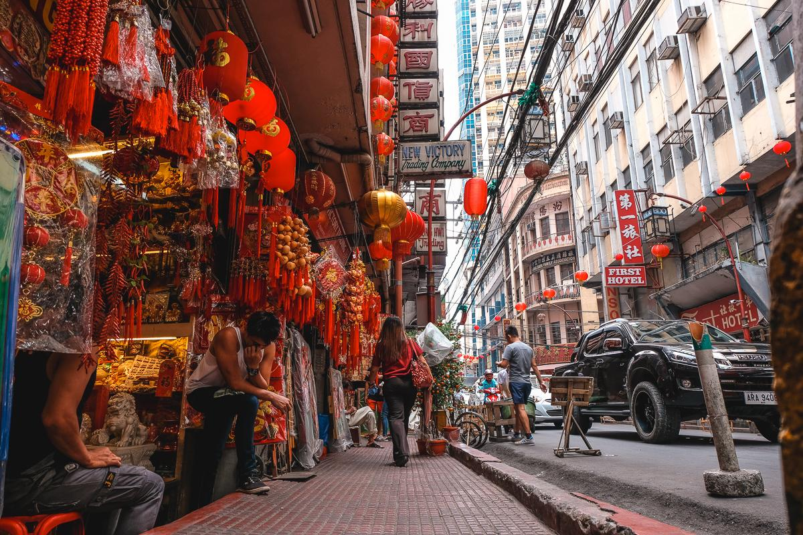

1. Intramuros
Intramuros is a historic walled district in Manila that preserves many landmarks from the Spanish colonial period. Visitors can explore old churches, stone walls, museums, and historic streets.
📍 Location: Manila, NCR

2. Rizal Park
Rizal Park is a well-known public park honoring national hero Dr. José Rizal. It is a popular place for sightseeing, walking, relaxing, and learning about Philippine history.
📍 Location: Ermita, Manila

3. Bonifacio Global City
Bonifacio Global City, or BGC, is a modern business and lifestyle district with restaurants, shops, parks, and public art. It is a great place to experience the modern side of Metro Manila.
📍 Location: Taguig, NCR

4. Fort Santiago
Fort Santiago is a historic fortress inside Intramuros. It played an important role during the Spanish colonial period and is connected to the life of José Rizal.
📍 Location: Intramuros, Manila

5. National Museum Complex
The National Museum Complex features collections related to Philippine art, history, and natural heritage. Visitors can discover exhibits that help explain the country's identity and cultural development.
📍 Location: Manila, NCR

6. Binondo, Manila
Binondo is known as the world's oldest Chinatown and is famous for its rich Chinese-Filipino culture, historic streets, temples, and delicious food. Visitors can enjoy a food trip and explore popular spots such as Binondo Church and traditional Chinese shops and restaurants.
📍 Location: Binondo, Manila, NCR